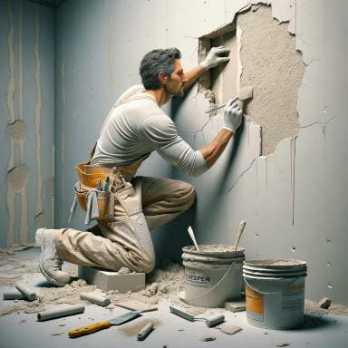
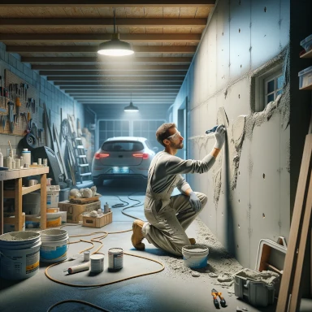
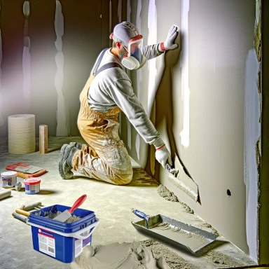
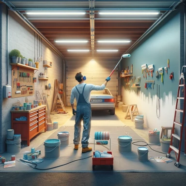

Drywall & Painting
Premier Drywall, Mudding, Taping, and Painting Services for Garages in Sherwood Park, Edmonton, and Beyond

All your Drywall needs
Welcome to the leading drywall, mudding, taping, and painting services in Sherwood Park, Edmonton, St. Albert, Fort Saskatchewan, Spruce Grove, and Stony Plain. Our expert team specializes in transforming your garage into a seamlessly finished space, combining functionality with aesthetic appeal.
Drywall Install and Finishing
In Sherwood Park and its surrounding areas, including St. Albert and Fort Saskatchewan, our drywall services set the standard. We understand the unique needs of each project, whether it's a new build or a renovation. Our skilled professionals ensure that the drywall installation in your garage is done with precision, creating the perfect canvas for further enhancements.
Mudding and Taping Excellence
Mudding and taping are crucial steps in achieving a flawless drywall finish, and our team in Spruce Grove and Stony Plain excels in these areas. We meticulously apply joint compound (mud) and tape to create smooth, even surfaces, eliminating any imperfections. This attention to detail ensures that the walls of your garage are not only strong but also visually appealing.
Pro Painting Services
Once the drywall is set, our painting services come into play, especially popular in Edmonton and the surrounding areas. We use high-quality paints and techniques to bring your garage to life, be it a classic, understated look or something more vibrant and expressive. Our painting professionals work closely with you to choose the right colors and finishes that reflect your style and enhance the overall aesthetics of your space.